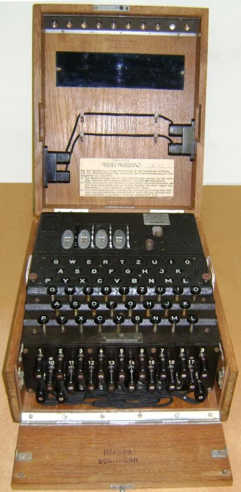

The need for secure communications for both military as civilian use became obvious in the early 1900s, with
the rise of wireless communication. The search to replace the impractical and time-consuming hand ciphers
began. In 1917, the American Edward Hugh Hebern developed a cipher machine with rotating disks, each disk
performing a substitution cipher. Hebern's idea was the base for many similar machines, developed in several
other countries.
In 1918, Engineer Arthur Scherbius patented a cipher machine using rotors. The German Navy and Foreign Offices
were approached, but were not interested. In 1923, the rights for the patents went to Chiffriermaschinen-AG, a
firm with Scherbius on the board of directors, that commercialized the machine. In 1927, Scherbius bought the
1919 patent from of a similar machine from the Dutchman Koch, in order to secure his own patent, approved in
1925.
The first cipher machine, the Handelsmaschine, was developed in 1923. It was a large and heavy machine with an
integrated typewriter and weighed about 50 Kg. In 1924, the similar Schreibende Enigma was introduced. The weight
and size of these machines made them unattractive for military use. In 1924, the development of the reflector, an
idea of Scherbius' colleague Willi Korn, made possible the compact and much lighter Enigma A and Enigma B with two
rotors, reflector, and a lamp panel that replaced the bulky typewriter. The Enigma B Mark II had three rotors and
a reflector. In 1925, the improved Enigma C was introduced, and in 1926 its successor Enigma D which had three
rotors and a reflector that could be set in one of the 26 positions.
The Enigma D was the basis for several commercial machines, in varying versions and with different rotor wirings.
These were sold across Europe to military and diplomatic services, and used before and during the Second World
War. These were the Enigma K, Enigma T or Tirpitz Enigma, Zählwerk Enigma and Enigma G that both moved the rotors
by gears instead of pawls, the Swiss-K, the Enigma Z that carried only numbers, The Reichsbahn Enigma or Railway
Enigma, and the Enigma Z. None of those machines had a plugboard, a military feature that would increase security
considerably from 1935 onwards.
Several intelligence services succeeded in breaking these civil and military Enigma versions, based on the
commercial D. The Italian Navy bought the commercial Enigma D, as did Spain during the Spanish Civil War. The
Swiss army used the Enigma K and Japan used the Enigma T, also called Tirpitz Enigma, but the Japanese also
developed their own version of the Enigma T, with the rotors placed horizontally. The messages of both models T
and K models were broken as well. The Railway Enigma, used by the German Reichsbahn in Eastern Europe, was
partially broken from 1941 onwards.
In 1926, the commercial Enigma was purchased by the German Navy and adapted for military use. They called it
Funkschlüssel C. Meanwhile, Chiffriermaschinen-AG developed a special Enigma with rotors that have the same
contact alignment as the D rotors, but with teeth, multiple notches and are advanced by cog wheels instead of
pawls and ratchets (see patent drawing left). It also had a rotating reflector and a counter on its left.
Today, only one such machine is known. This probably experimental model, presented in 1928 but exceptionally
only patented in 1931, lead to the Enigma G.
The Enigma G had different rotors with a zigzag pin placement and the counter on its right. Its rotors, which
also had multiple notches, were moved by a system of gears, similar to the 1928 special predecessor. Already
in 1928, the German Abwehr (Secret Service) bought the 12 Kg light Enigma G, also called Zahlwerk (clock-work)
Enigma due to it's counter on the front panel. The Enigma G was exclusively used by the Abwehr.
In 1932, the Wehrmacht revised the commercial Enigma D and added the plugboard at the front of the machine.
This version, the Enigma I, became known as the Wehrmacht Enigma and was introduced on a large scale in the
Heer (Army) and public authorities. The Luftwaffe (Air Force) followed the Heer's lead in 1935. The Wehrmacht
Enigma came initially with three rotors. From 1939 on they were equipped with five rotors.

In 1934, the German Navy adopted the Wehrmacht model, with its securer plugboard, and extended the set of rotors
to eight. The Navy machine was called Funkschlüssel M or M3. In 1941, although reassured by the Abwehr that the
Enigma M3 was unbreakable, Admiral Karl Dönitz insisted on improvement of the Kriegsmarine Enigma. Early in 1942,
the famous four rotor M4 model was introduced in the Kriegsmarine.
During the war, different types of reflectors were introduced. The B and C reflector were used on Heer and
Luftwaffe models, and also on the Kriegsmarine M3. The Kriegsmarine M4 used a thin B and C version, to fit in the
4 rotor machine, with other wirings, but if 'zeroized' in combination with its fourth rotor compatible with the
Heer and Luftwaffe version. By the End of the war German Command tried to introduce a new type D rewireable
reflector.
Early use of this reflector posed a significant problem to Allied codebreakers, but problems in distribution of
this reflector and their key sheets prevented a widespread use of the D reflector. Another military add-on,
introduced in 1944 by the Luftwaffe, was an extra plugboard switch, called the Uhr (clock), a switch with 40
positions, each position resulting in a different combination of plug wiring.
An estimated total of 100,000 Enigma machines were produced. Although generally known as Enigma, there were only
a few machines that actually carried the name Enigma and the logo. Most machines only had a serial number and
fabrication code. The machines were produced in different factories on various locations such as Ertel-Werk für
Feinmechanik in München, Olympia Büromaschinenwerke in Erfurt, Chiffriermaschinengesellschaft Heimsoeth & Rinke in
Berlin, Atlas-Werke Maschinenfabrik in Bremen and Konski & Krüger in Berlin. The machines that survived the war
were confiscated by the Allies and mostly sold to other countries. The rotors of these machines were often
rewired. Of course, they forgot to mention that they were able to break them.